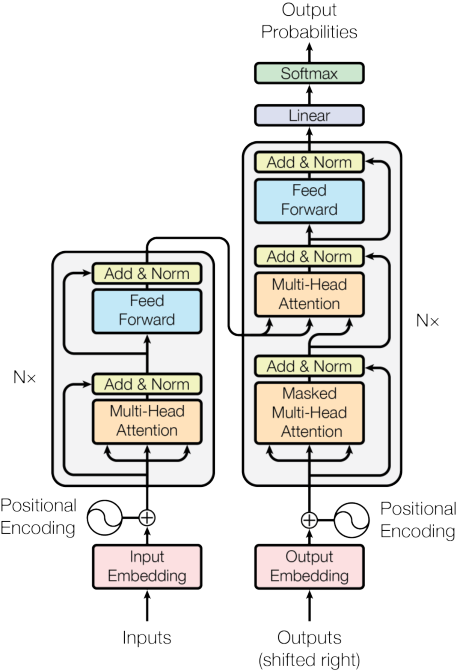
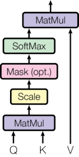
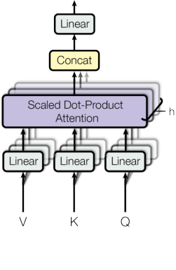

在妥善注明出处的前提下，Google 特此允许仅为新闻报道或学术用途复制本文中的表格与插图。
Attention Is All You Need（注意力就是你所需要的一切）
Ashish Vaswani∗ Noam Shazeer∗ Niki Parmar∗ Jakob Uszkoreit∗ 谷歌大脑 谷歌大脑 谷歌研究院 谷歌研究院 avaswani@google.com noam@google.com nikip@google.com usz@google.com
Llion Jones∗ Aidan N. Gomez∗† Łukasz Kaiser∗ 谷歌研究院 多伦多大学 谷歌大脑 llion@google.com aidan@cs.toronto.edu lukaszkaiser@google.com
Illia Polosukhin∗‡ illia.polosukhin@gmail.com
摘要
主流的序列转导模型基于复杂的循环或卷积神经网络，并包含一个编码器和一个解码器。表现最好的模型还通过注意力机制将编码器与解码器连接起来。我们提出了一种新的简单网络架构——Transformer，它完全基于注意力机制，彻底摒弃了循环与卷积。在两项机器翻译任务上的实验表明，这些模型在质量上更胜一筹，同时更具并行性，所需训练时间也显著更少。我们的模型在 WMT 2014 英德翻译任务上取得 28.4 BLEU，将包括集成模型在内的既有最佳结果提升了超过 2 BLEU。在 WMT 2014 英法翻译任务上，我们的模型在八块 GPU 上训练 3.5 天后，创下了 41.8 的单模型最新 BLEU 纪录，训练成本仅为文献中最佳模型的一小部分。通过将 Transformer 成功应用于大数据量与小数据量两种设定下的英语成分句法分析，我们证明它能很好地泛化到其他任务。
∗ 同等贡献。署名顺序随机。Jakob 提出用自注意力取代 RNN，并发起了对这一想法的评估工作。Ashish 与 Illia 一起设计并实现了最早的 Transformer 模型，并深度参与了这项工作的方方面面。Noam 提出了缩放点积注意力、多头注意力以及无参数的位置表示，成为另一位几乎参与所有细节的人。Niki 在我们最初的代码库与 tensor2tensor 中设计、实现、调优并评估了无数模型变体。Llion 也实验了新颖的模型变体，负责我们最初的代码库以及高效推理与可视化。Lukasz 和 Aidan 花费了无数个漫漫长日，设计并实现了 tensor2tensor 的各个部件，取代了我们早期的代码库，大幅提升了结果，并极大地加速了我们的研究。 † 本工作完成于 Google Brain 期间。 ‡ 本工作完成于 Google Research 期间。 第 31 届神经信息处理系统大会（NIPS 2017），美国加利福尼亚州长滩。
1 引言
循环神经网络，尤其是长短期记忆网络 [13] 与门控循环 [7] 网络，已被牢固确立为语言建模与机器翻译等序列建模和转导问题上的最先进方法 [35, 2, 5]。此后，众多努力持续推动着循环语言模型与编码器-解码器架构的边界 [38, 24, 15]。 循环模型通常沿输入与输出序列的符号位置分解计算。通过将位置与计算时间的步骤对齐，它们生成一系列隐藏状态 $h_t$，该状态是前一个隐藏状态 $h_{t-1}$ 与位置 $t$ 处输入的函数。这种固有的串行特性排除了训练样本内部的并行化，而在序列长度较长时这一点变得尤为关键，因为内存约束限制了跨样本的批处理。最近的工作通过分解技巧 [21] 与条件计算 [32] 在计算效率上取得了显著提升，后者同时也提升了模型性能。然而，串行计算这一根本约束依然存在。 在各类任务中，注意力机制已成为出色的序列建模与转导模型不可或缺的组成部分，它允许对依赖关系建模而不受其在输入或输出序列中距离的约束 [2, 19]。然而，除少数例外 [27]，这类注意力机制仍与循环网络联合使用。 在这项工作中，我们提出 Transformer，这一模型架构摒弃循环，转而完全依赖注意力机制来建立输入与输出之间的全局依赖。Transformer 允许显著更高的并行度，并且只需在八块 P100 GPU 上训练少至十二小时，就能在翻译质量上达到新的最先进水平。
2 背景
减少串行计算的目标，同样构成了 Extended Neural GPU [16]、ByteNet [18] 与 ConvS2S [9] 的基础，它们都以卷积神经网络为基本构件，并行为所有输入与输出位置计算隐藏表示。在这些模型中，关联两个任意输入或输出位置的信号所需的运算量随位置间距离增长——对 ConvS2S 是线性增长，对 ByteNet 是对数增长。这使得学习远距离位置之间的依赖关系更为困难 [12]。在 Transformer 中，这一运算量被缩减为常数次运算，尽管其代价是由于对注意力加权位置取平均而导致有效分辨率降低，我们将在第 3.2 节所述的多头注意力中抵消这一影响。 自注意力（self-attention），有时也称内部注意力（intra-attention），是一种将单个序列的不同位置关联起来以计算该序列表示的注意力机制。自注意力已被成功地用于多种任务，包括阅读理解、摘要生成、文本蕴含以及学习与任务无关的句子表示 [4, 27, 28, 22]。 端到端记忆网络基于循环注意力机制，而非序列对齐的循环结构，并已被证明在简单语言问答与语言建模任务上表现良好 [34]。 然而，据我们所知，Transformer 是第一个完全依赖自注意力来计算其输入与输出表示、而不使用序列对齐的 RNN 或卷积的转导模型。在接下来的章节中，我们将描述 Transformer，阐释自注意力的动机，并讨论其相对于 [17, 18] 与 [9] 等模型的优势。
3 模型架构
大多数有竞争力的神经序列转导模型都具有编码器-解码器结构 [5, 2, 35]。这里，编码器将符号表示的输入序列 $(x_1, \ldots, x_n)$ 映射为连续表示的序列 $\mathbf{z} = (z_1, \ldots, z_n)$。给定 $\mathbf{z}$，解码器随后一次一个元素地生成符号的输出序列 $(y_1, \ldots, y_m)$。在每一步，模型都是自回归的 [10]，在生成下一个符号时，将先前生成的符号作为额外输入。

图 1：Transformer——模型架构。 Transformer 遵循这一整体架构，为编码器与解码器使用堆叠的自注意力与逐点、全连接层，分别如图 1, 的左半与右半所示。3.1 编码器与解码器堆栈
编码器： 编码器由 $N = 6$ 个完全相同的层堆叠而成。每一层有两个子层。第一个子层是多头自注意力机制，第二个子层是一个简单的、逐位置的全连接前馈网络。我们在每个子层周围采用残差连接 [11]，随后进行层归一化 [1]。也就是说，每个子层的输出为 $\mathrm{LayerNorm}(x + \mathrm{Sublayer}(x))$，其中 $\mathrm{Sublayer}(x)$ 是该子层自身实现的函数。为了便于这些残差连接，模型中的所有子层以及嵌入层产生的输出维度均为 $d_{\text{model}} = 512$。 解码器： 解码器同样由 $N = 6$ 个完全相同的层堆叠而成。除了每个编码器层中的两个子层之外，解码器还插入第三个子层，对编码器堆栈的输出执行多头注意力。与编码器类似，我们在每个子层周围采用残差连接，随后进行层归一化。我们还修改了解码器堆栈中的自注意力子层，以防止位置关注其后续位置。这种掩码，加上输出嵌入整体右移一个位置的事实，保证了位置 $i$ 处的预测只能依赖小于 $i$ 的位置上的已知输出。
3.2 注意力
注意力函数可以描述为：将一个查询（query）与一组键值对（key-value pairs）映射到输出，其中查询、键、值和输出都是向量。输出被计算为值的加权和，而分配给每个值的权重，由查询与相应键的兼容性函数计算得出。


图内文字（原文提取，待翻译）
多头注意力图 2：（左）缩放点积注意力。（右）多头注意力由多个并行运行的注意力层组成。
3.2.1 缩放点积注意力
我们将本文采用的注意力称为"缩放点积注意力"（Scaled Dot-Product Attention，图 2）。输入由维度为 $d_k$ 的查询与键、以及维度为 $d_v$ 的值组成。我们计算查询与所有键的点积，将每个点积除以 $\sqrt{d_k}$，然后应用 softmax 函数以得到各值的权重。 在实践中，我们会同时针对一组查询计算注意力函数，并将它们一起打包成矩阵 $Q$。键与值也被一起打包成矩阵 $K$ 与 $V$。我们按如下方式计算输出矩阵： $$\mathrm{Attention}(Q, K, V) = \mathrm{softmax}\left(\frac{QK^T}{\sqrt{d_k}}\right)V \tag{1}$$ 两种最常用的注意力函数是加性注意力 [2] 与点积（乘性）注意力。除缩放因子 $\frac{1}{\sqrt{d_k}}$ 之外，点积注意力与我们的算法完全相同。加性注意力使用带单个隐藏层的前馈网络来计算兼容性函数。虽然二者在理论复杂度上相似，但点积注意力在实践中快得多、也更节省空间，因为它可以用高度优化的矩阵乘法代码来实现。 当 $d_k$ 较小时，这两种机制的表现相近；而当 $d_k$ 较大时，不加缩放的加性注意力要优于点积注意力 [3]。我们猜测，对于较大的 $d_k$，点积的幅值会变得很大，从而把 softmax 函数推入梯度极小的区域4。为抵消这一影响，我们将点积缩放 $\frac{1}{\sqrt{d_k}}$ 倍。
3.2.2 多头注意力
与其用 $d_{\text{model}}$ 维的键、值和查询执行单次注意力函数，我们发现将查询、键和值用 $h$ 个不同的、可学习的线性投影分别线性投影到 $d_k$、$d_k$ 和 $d_v$ 维更为有益。然后，在这些查询、键和值的每个投影版本上并行地执行注意力函数，产生 $d_v$ 维的输出值。这些输出再被拼接起来并再次投影，最终得到最终的值，如图 2 所示。
4为说明点积为何会变大，假设 $q$ 与 $k$ 的分量是均值为 0、方差为 1 的独立随机变量。那么它们的点积 $q \cdot k = \sum_{i=1}^{d_k} q_i k_i$ 的均值为 0，方差为 $d_k$。 多头注意力使模型能够共同关注来自不同表示子空间、不同位置的信息。若只有单个注意力头，取平均会抑制这一点。 $$\mathrm{MultiHead}(Q, K, V) = \mathrm{Concat}(\mathrm{head}_1, \ldots, \mathrm{head}_h)W^O \\ \text{where } \mathrm{head}_i = \mathrm{Attention}(QW_i^Q, KW_i^K, VW_i^V)$$ 其中各投影为参数矩阵 $W_i^Q \in \mathbb{R}^{d_{\text{model}} \times d_k}$、$W_i^K \in \mathbb{R}^{d_{\text{model}} \times d_k}$、$W_i^V \in \mathbb{R}^{d_{\text{model}} \times d_v}$ 与 $W^O \in \mathbb{R}^{h d_v \times d_{\text{model}}}$。 在本工作中，我们采用 $h = 8$ 个并行的注意力层，或称注意力头。对于每一个头，我们都使用 $d_k = d_v = d_{\text{model}}/h = 64$。由于每个头的维度降低，总计算成本与全维度的单头注意力相近。
3.2.3 注意力在我们模型中的应用
Transformer 在三个不同方面使用多头注意力： - 在"编码器-解码器注意力"层中，查询来自前一个解码器层，而记忆键与值来自编码器的输出。这使得解码器中的每个位置都能关注输入序列中的所有位置。这种做法模拟了 [38, 2, 9] 等序列到序列模型中典型的编码器-解码器注意力机制。 - 编码器包含自注意力层。在自注意力层中，所有的键、值和查询都来自同一处，即编码器中上一层的输出。编码器中的每个位置都可以关注编码器上一层的所有位置。 - 类似地，解码器中的自注意力层允许解码器中的每个位置关注解码器中直到并包括该位置的所有位置。我们需要防止解码器中的信息向左流动，以保持自回归性质。我们在缩放点积注意力内部实现这一点，做法是将 softmax 输入中对应非法连接的所有值掩蔽掉（设为 $-\infty$）。见图 2。
3.3 逐位置前馈网络
除了注意力子层之外，编码器与解码器中的每一层还包含一个全连接前馈网络，它被分别且相同地应用于每个位置。该网络由两个线性变换组成，中间有一个 ReLU 激活。 $$\mathrm{FFN}(x) = \max(0, xW_1 + b_1)W_2 + b_2 \tag{2}$$ 虽然这些线性变换在不同位置上是相同的，但它们在不同层之间使用不同的参数。另一种描述方式，是将其视为两个核大小为 1 的卷积。输入与输出的维度为 $d_{\text{model}} = 512$，内层的维度为 $d_{ff} = 2048$。
3.4 嵌入与 softmax
与其他序列转导模型类似，我们使用可学习的嵌入，把输入词元与输出词元转换为维度为 $d_{\text{model}}$ 的向量。我们还使用常规的可学习线性变换与 softmax 函数，把解码器的输出转换为对下一个词元的预测概率。在我们的模型中，两个嵌入层与 pre-softmax 线性变换共享同一个权重矩阵，类似 [30]。在嵌入层中，我们将这些权重乘以 $\sqrt{d_{\text{model}}}$。
表 1：不同层类型的最大路径长度、每层复杂度与最少串行操作数。$n$ 为序列长度，$d$ 为表示维度，$k$ 为卷积的核大小，$r$ 为受限自注意力中邻域的大小。
| 层类型 | 每层复杂度 | 串行 操作数 |
最大路径长度 |
|---|---|---|---|
| 自注意力 | O(n² · d) | O(1) | O(1) |
| 循环 | O(n · d²) | O(n) | O(n) |
| 卷积 | O(k · n · d²) | O(1) | O(logₖ(n)) |
| 自注意力（受限） | O(r · n · d) | O(1) | O(n/r) |
3.5 位置编码
由于我们的模型不含循环也不含卷积，为了让模型能够利用序列的顺序信息，我们必须向序列中注入一些关于词元相对或绝对位置的信息。为此，我们在编码器与解码器堆栈底部的输入嵌入中加入"位置编码"（positional encodings）。位置编码与嵌入具有相同的维度 $d_{\text{model}}$，因此二者可以相加。位置编码有多种选择，既可学习也可固定 [9]。 在本工作中，我们使用不同频率的正弦与余弦函数： $$PE_{(pos,2i)} = \sin(pos/10000^{2i/d_{\text{model}}}) \\ PE_{(pos,2i+1)} = \cos(pos/10000^{2i/d_{\text{model}}})$$ 其中 $pos$ 是位置，$i$ 是维度。也就是说，位置编码的每个维度都对应于一条正弦曲线。这些波长构成一个从 $2\pi$ 到 $10000 \cdot 2\pi$ 的几何级数。我们之所以选择这一函数，是因为我们假设它能让模型更容易地学会按相对位置进行关注，因为对任意固定偏移量 $k$，$PE_{pos+k}$ 都可以表示为 $PE_{pos}$ 的线性函数。 我们也试验过改用可学习的位置嵌入 [9]，发现两个版本产生了几乎完全相同的结果（见表 3 的第 (E) 行）。我们选择正弦版本，是因为它或许能让模型外推到比训练中遇到的更长的序列长度。
4 为什么使用自注意力
在本节中，我们将自注意力层的各个方面，与常用于把一个可变长度的符号表示序列 $(x_1, \ldots, x_n)$ 映射为另一个等长序列 $(z_1, \ldots, z_n)$（其中 $x_i, z_i \in \mathbb{R}^d$）的循环层和卷积层进行比较，这里的序列例如典型序列转导编码器或解码器中的隐藏层。为论证我们使用自注意力的动机，我们考虑三点期望。 其一是每层的总计算复杂度。其二是可被并行化的计算量，以所需最少串行操作数来衡量。 其三是网络中长程依赖之间的路径长度。学习长程依赖是许多序列转导任务中的关键挑战。影响这种依赖关系学习能力的一个关键因素，是前向与反向信号在网络中必须穿过的路径长度。输入与输出序列中任意位置组合之间的这些路径越短，就越容易学习长程依赖 [12]。因此，我们还比较了由不同层类型构成的网络中任意两个输入与输出位置之间的最大路径长度。 如表 1, 所示，自注意力层用常数次串行执行的操作连接所有位置，而循环层则需要 $O(n)$ 次串行操作。就计算复杂度而言，当序列
说明：本文件为
academic-pdf-zhskill 的端到端演示样章（Transformer 第 1–6 页节选），由流水线真实产出：解析 → 结构审计 → 内容冻结 → 分块翻译 → 逐格表格任务（Table 1 全部 20 个单元格）→ 确定性组装 → 终检 PASS（见validation.md）。非完整论文翻译。